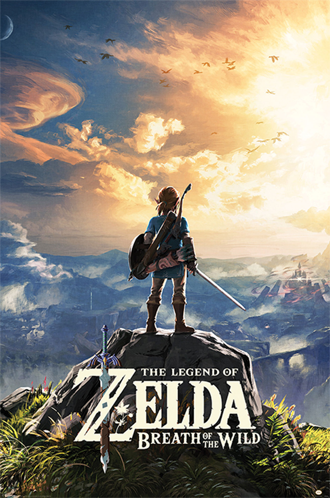

Breath of the Wild markierte 2017 einen radikalen Neuanfang: offene Welt, Physik- und Chemie-Systeme sowie emergentes Gameplay. Die Welt reagiert auf Spieleraktionen, viele Herausforderungen lassen kreative, unkonventionelle Lösungen zu. Es ist ein Meilenstein modernen Open-World-Designs.
| Titel | The Legend of Zelda: Breath of the Wild |
| Veröffentlichung | 3. März 2017 (weltweit) |
| Plattform | Nintendo Switch / Wii U |
| Entwickler | Nintendo EPD (mit Monolith Soft) |
| Produzent | Eiji Aonuma |
| Komponist | Various |
Systemisch gedacht: offene Welt, emergente Problemlösung, Physik- und Chemiesysteme sowie zerbrechliche Gegenstände setzen neue Freiheiten. Spieler erreichen Ziele in beliebiger Reihenfolge; Rätsel und Schreine belohnen kreatives Denken (z. B. Bomben, Magnetismus, Turm-Schaltkreise). Die Welt reagiert auf Wettereinflüsse, Feuer, Wind und Materialien; Gegner-AI, Zufallsbegegnungen und Ressourcen-Management (Nahrung, Waffenverschleiß) formen Survival-Aspekte. Die narrative Rahmung bleibt eher lose, legt aber großen Fokus auf Erkundung, Entdeckung und Spieler-Initiative.